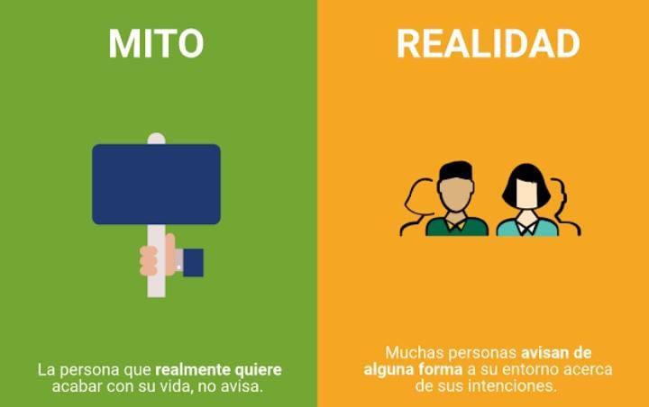

Existen muchas ideas erróneas sobre la salud mental. Es importante aclararlas para eliminar el estigma y promover el bienestar.
| Mito | Realidad |
|---|---|
| "Ir al psicólogo es solo para locos". | Ir al psicólogo es un acto de autocuidado. Todos necesitamos apoyo en momentos difíciles. |
| "El problema se va solo si lo ignoras". | Ignorar los problemas puede empeorarlos. Buscar ayuda es el primer paso para sanar. |
| "La depresión es solo estar triste". | La depresión es una condición clínica que afecta el funcionamiento diario. No es solo tristeza. |